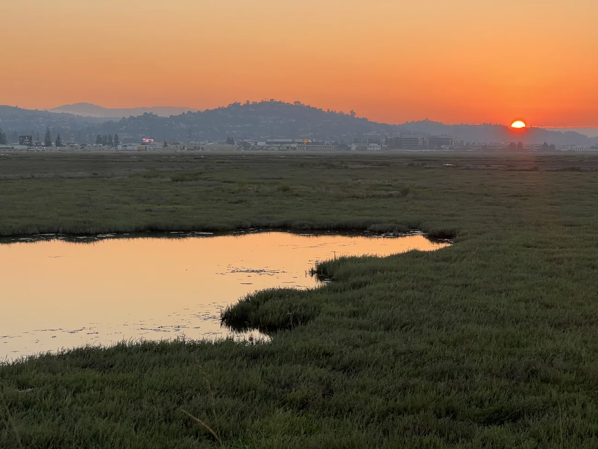

Bay Area
browser games
Identify marsh birds, help newts cross Alma Bridge Road, and see what goes into a shift at Hope's Corner.
Browse games
Identify marsh birds, help newts cross Alma Bridge Road, and see what goes into a shift at Hope's Corner.
Browse games